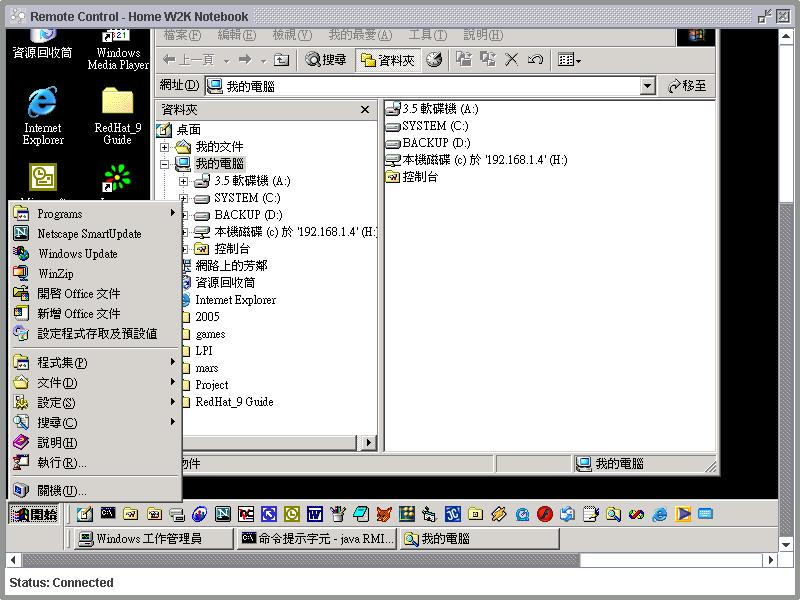

With the launch of RMIAdmin v1.3, the Remote Control (BETA) version is offered, we are providing this function as a courtesy to System Amdin and Developers for problem resolution.
Please kindly note that this utility is still in the beginning stages for development, so it may perform erratically. If something is not working, please visit the RMIAdmin official website at http://www.rmiAdmin.net for the latest enhancements, bug and security fixes.
Should you have any comment or suggestion, please send us an email to cs@rmiadmin.net .
Follow the instructions below to use the remote control:
-
First, go to the top menu bar, select "Tools" -> "Remote Control [Beta]".
- Choose your target server to operate by clicking the "Select Server" button.
-
All the managed server will be loaded into a list box, simply choose your preferred
server, and click "OK" to continue.

-
Wait for a little while until the remote computer return its desktop screen.
There maybe some delay for initialization upon first time screen capturing.

Basic Requirement for Remote Control
- In order to support the Remote Control feature, the remote computer must start the RMIServer service in Graphical Environments.
- For Windows users, this is not a concern as Graphical Environments is the default mode when the operating system start up.
- However for all Unix-like system (such as Linux, MAC OS X), the RMIServer must be started in an X-Windows environment. This simply means that if you are using SSH or telnet to start the RMIServer service, then obviously no remote control session could be established with this computer.
- Note that some platforms require special privileges or extensions to access low-level input control. If the current platform configuration does not allow input control, an AWTException error will be thown upon the startup of RMIServer service.
- For example, X-Window systems will throw the exception if the XTEST 2.2 standard extension is not supported (or not enabled) by the X server.
Related Topics:
|
|
Copyright 2005 © RMIAdmin. All rights reserved. |